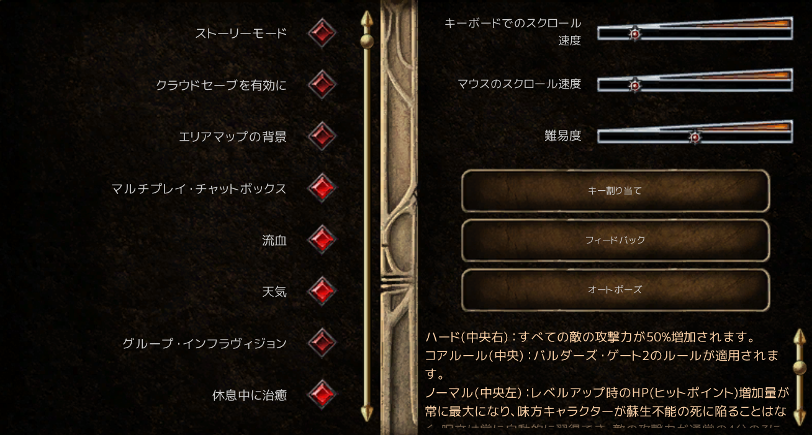
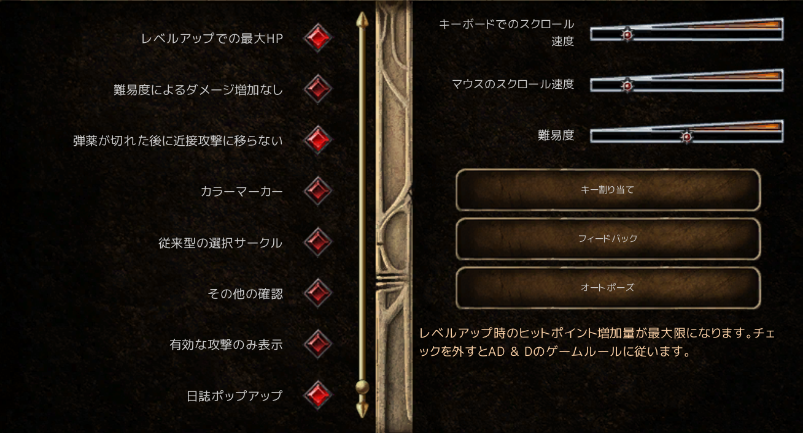

目次

最初に
BG2EEをソーサラーでプレイしてみようと思う。😋
日本語でプレイしようとすると、パッチが必要など、ゲーム以外のノウハウも必要なので備忘録としてまとめる。
以前プレイしたゲームの自キャラのSnowと共に楽しく記録していきたい。✨
私はこのゲームがうまいわけでも何でもないが、時々発作に襲われて、周期的にプレイしたくなるので、
自衛のためにプレイ動画をまとめようと思う😅
日本語化
BGEE2は英語版のみなので、下記の３ステップで環境を整えた。
Step1 BG2EEを2.5に変更（日本語化パッチが2.5にしか対応していないため）
Step2 日本語化
Step3 UIの改善
Step1 BG2EEを2.5に変更

① Steamのライブラリの『Baldur's Gate II EE』を右クリック
② プロパティ
③ ゲームバージョンとベータ
④ bgiiee_2.5を選択
⑤ ダウンロードが終わるまで待った
ゲームのタイトル画面の上部に表示されたバージョンが2.5になった。
Step2 日本語化
① 日本語化パッチを入手
BGEE Spoiler Wikiの日本語化ページのリンクをたどって『BG2EE日本語化パッチ_2.5.zip』をダウンロードした。
② パッチの適用
パッチを解凍するとlang,override,Portraitsの３つのフォルダができた。
lang,overrideフォルダをゲームフォルダ（C:\Program Files (x86)\Steam\steamapps\common\Baldur's Gate II Enhanced Edition）にコピーした。
③ 日本語を選択
ゲームを起動して、languageからJapaneseを選択した。
Step3 UIの改善
① LeUIを入手
LeUIの公式GitHubのリンクをたどって『lefreuts-enhanced-ui-bg2ee-skin-4.3.2.zip』をダウンロードした。
② LeUIの適用
ゲームフォルダ（C:\Program Files (x86)\Steam\steamapps\common\Baldur's Gate II Enhanced Edition）に
LeUIを解凍した。
setup-LeUI.exeを実行した。
ポートレートの変更
BGはポートレートはいまいちなので、ポートレートパックから選択して、これを使った。
解凍して、ゲームデータフォルダ（C:\\Users\\\<ユーザー名\>\\Documents\\Baldur's Gate II - Enhanced Edition）にコピーした。
ちなみに、ゲームデータをバックアップするときは、このゲームデータフォルダを丸ごと保存するとよい。
主人公
〇魔法
Level1 クロマティックオーブ/マジックミサイル/シールド/スプーク/アイデンティファイ
Level2 ミラーイメージ/ノック/ウェブ
Level3 スカルトラップ/ヘイスト


ゲームプレイ設定
ゲームプレイ設定は、『難易度はコアルール』、『レベルアップ時最大HP』、『弾切れ時近接攻撃に移らない』にした。



主人公魔法 計画/実績
レベルごとに下表のように魔法を取得していこうと思う。
今回はこのように進めたが、ヘイストとメルフズ・ミニット・メテオズの取得順は入れ替えた方が良かったと反省。
■Level7 ■Level8 ■Level9 ■Level10 ■Level11
■Level12 ■Level13
| 1 | 2 | 3 | 4 | 5 | |
|---|---|---|---|---|---|
| Level 1 | クロマティックオーブ | マジックミサイル | シールド | スプーク | アイデンティファイ |
| Level 2 | ミラーイメージ | ノック | ウェブ | メルフズ・アシッドアロー | ブラー |
| Level 3 | スカル・トラップ | ヘイスト | メルフズ・ミニット・メテオズ | スロー | スペル・スラスト |
| Level 4 | ストーンスキン | グレーター・マリソン | インプルーヴド・インヴィジビリティ | マイナー・シーケンサー | シークレットワード |
| Level 5 | アニメイトデッド | ブリーチ | ローワーレジスタンス | スペルイミュニティ | スペルシールド |
| Level 6 | ピアースマジック | トゥルーサイト | プロテクション・フロム・マジカルウェポン | コンティンジェンシー | インプルーヴド・ヘイスト |
| Level 7 | プロジェクトイメージ | モルデンカイネンズソード | ルビーレイ・オブ・リヴァーサル | スペルシーケンサー | パワーワード：スタン |
| Level 8 | アビ・ダルジムズ・ホリッド・ウィルティング | シミュレイクラム | スペルトリガー | ピアース・シールド | メイズ |
| Level 9 | タイムストップ | チェインコンティンジェンシー | ウィッシュ | スペルストライク | ～ |
装備 計画
最終的には、下表のような装備を揃えたい。大部分が２章で入手可能なようなので、装備の収集を優先に進めようと思う。
| 部位 | 主人公 | エアリー | ||||
|---|---|---|---|---|---|---|
| 名称 | 入手場所 | 主な効果 | 名称 | 入手場所 | 主な効果 | |
| 武器 | スタッフ・オブ・マギ | ボダイ（Bodhi）の墓地ギルドで吸血鬼のボスから入手（Chapter 6終盤） | 透明化 | フレイル・オブ・エイジス+5 | デ・アルニス城（ナリアのクエスト） | 属性攻撃 |
| スタッフ・オブ・ラム+6 | ウォッチャーズ・キープ5階で入手。 | 吹き飛ばし | クロム・ファエル+5 | ・Hammer of Thunderbolts +3 寺院地区の下水道 → イリシッドの隠れ家 ・Crom Faeyr Scroll ウマル・ヒルの廃寺院（Temple Ruins） シャドウ・ドラゴン ・Hands of Takkok / Gauntlets of Ogre Power プレイナー・スフィア ・Girdle of Frost Giant Strength アンダーダークのクオ・トアのダンジョン デーモン・ナイト5体との戦闘後、そのうちの1体から入手 |
STR 25 | |
| スタッフ・オブ・リン+4 | アドベンチャラーマートで購入。序盤から買える最強クラスの武器。 18900G |
序盤の攻撃力 | ||||
| クリムゾン・ダーツ+3 | ウオッチャーズキープ１階 | 遠距離 弾不要 |
スリング・オブ・エヴァラード+5 | コッパー・コロネット（Copper Coronet）の追加商人 Joluv が販売（EE版・ボーナス商人有効時）。価格は29,750G。 | 遠距離 弾不要 |
|
| ローブ | ローブ・オブ・ヴェクナ | アドベンチャラーマート2階奥にいる追加商人のDeidreが販売 23800 | 詠唱短縮 AC強化 マジックレジスタンス強化 |
ローブ・オブ・グッドアーチメイジ | トレードミート（Trademeet）の鍛冶屋（Smithy）が販売。30,750G | AC強化 セービングスロー強化 マジックレジスタンス強化 |
| アミュレット | アミュレット・オブ・パワー | **アラン・リヴェイル（Aran Linvail）**のクエストを進めると報酬として入手。Chapter 3で取得可能。 | 詠唱短縮 | ジ・アンプリファイヤー | イレニカスのダンジョン1階 マスター（Master）の部屋 | 魔法増量 |
| 手 | ブレーサー・オブ・ディフェンスAC3 | アドベンチャラーズ・マート9,100G | AC強化 | ブレーサー・オブ・ディフェンスAC4 | アドベンチャラーズ・マート7,000G | AC強化 |
| 指輪１ | リング・オブ・ガックス | **カンガックス（Kangaxx）**を倒すと入手。ゲーム最強クラスの指輪。 | AC強化 再生 セービングスロー強化 |
リング・オブ・リジェネレーション | アドベンチャラーマートのリボルド（Ribald）からスリで入手（倒しても可だが非推奨）。 | 再生 |
| 指輪２ | リング・オブ・アキュイティ | プレイナー・スフィアのクエス 最奥部で老魔術師 ラヴォック（Lavok） に会い、クエストを最後まで進めると、ラヴォックの遺体から Ring of Acuity を入手 |
魔法増量 | |||
| 指輪予備 | リング・オブ・ヒューマンインフルエンス | サーカステント | 値下げ | |||
| ブーツ | パウズ・オブ・ザ・チーター | プレナー・プリズン | 高速移動 | パウズ・オブ・ザ・チーター | スペルホールド | 高速移動 |
| 頭 | ブロンズ・イオウンストーン | ToB サラドゥシュ関連 | 魔法増量 | ヘルム・オブ・バルダラン | イレニカスのダンジョン1階 | THACO強化 AC強化 セービングスロー強化 HP強化 |
| ダスティローズ・イオウンストーン | スペルホールド地下（Spellhold Dungeon） | AC強化 | パールホワイト・イオウンストーン | ウマー・ヒルズ（Umar Hills） 第1階層（Temple Ruins Dungeon Level 1） 溶岩の部屋（Lava Room） |
再生 | |
| ベルト | ベルト・オブ・イナーシャル・バリアー | トレードミートの商人（バザールの露店）が販売 16,375G | 魔法ダメージ半減 | ガードル・オブ・ヒルジャイアントストレングス | アドベンチャラーズ・マート（Adventure Mart）14,000G | 荷物増量 フレイルオブエイジス装着 |
ソーサラーのレベルと経験値の関係
| レベル | Lv.1 | Lv.2 | Lv.3 | Lv.4 | Lv.5 | Lv.6 | Lv.7 | Lv.8 | Lv.9 | 経験値 | 備考 |
|---|---|---|---|---|---|---|---|---|---|---|---|
| 1 | 3/2 | 0/0 | 0/0 | 0/0 | 0/0 | 0/0 | 0/0 | 0/0 | 0/0 | 0 | |
| 2 | 4/2 | 0/0 | 0/0 | 0/0 | 0/0 | 0/0 | 0/0 | 0/0 | 0/0 | 2500 | |
| 3 | 5/3 | 0/0 | 0/0 | 0/0 | 0/0 | 0/0 | 0/0 | 0/0 | 0/0 | 5000 | |
| 4 | 6/3 | 3/1 | 0/0 | 0/0 | 0/0 | 0/0 | 0/0 | 0/0 | 0/0 | 10000 | |
| 5 | 6/4 | 4/2 | 0/0 | 0/0 | 0/0 | 0/0 | 0/0 | 0/0 | 0/0 | 20000 | |
| 6 | 6/4 | 5/2 | 3/1 | 0/0 | 0/0 | 0/0 | 0/0 | 0/0 | 0/0 | 40000 | |
| 7 | 6/5 | 6/3 | 4/2 | 0/0 | 0/0 | 0/0 | 0/0 | 0/0 | 0/0 | 60000 | |
| 8 | 6/5 | 6/3 | 5/2 | 3/1 | 0/0 | 0/0 | 0/0 | 0/0 | 0/0 | 90000 | |
| 9 | 6/5 | 6/4 | 6/3 | 4/2 | 0/0 | 0/0 | 0/0 | 0/0 | 0/0 | 135000 | |
| 10 | 6/5 | 6/4 | 6/3 | 5/2 | 3/1 | 0/0 | 0/0 | 0/0 | 0/0 | 250000 | |
| 11 | 6/5 | 6/5 | 6/4 | 6/3 | 4/2 | 0/0 | 0/0 | 0/0 | 0/0 | 375000 | |
| 12 | 6/5 | 6/5 | 6/4 | 6/3 | 5/2 | 3/1 | 0/0 | 0/0 | 0/0 | 750000 | |
| 13 | 6/5 | 6/5 | 6/4 | 6/4 | 6/3 | 4/2 | 0/0 | 0/0 | 0/0 | 1125000 | |
| 14 | 6/5 | 6/5 | 6/4 | 6/4 | 6/3 | 5/2 | 3/1 | 0/0 | 0/0 | 1500000 | 7レベル呪文 |
| 15 | 6/5 | 6/5 | 6/4 | 6/4 | 6/4 | 6/3 | 4/2 | 0/0 | 0/0 | 1875000 | |
| 16 | 6/5 | 6/5 | 6/4 | 6/4 | 6/4 | 6/3 | 5/2 | 3/1 | 0/0 | 2250000 | 8レベル呪文 |
| 17 | 6/5 | 6/5 | 6/4 | 6/4 | 6/4 | 6/3 | 6/3 | 4/2 | 0/0 | 2625000 | |
| 18 | 6/5 | 6/5 | 6/4 | 6/4 | 6/4 | 6/3 | 6/3 | 5/2 | 3/1 | 3000000 | HLA解禁・9レベル呪文 |
| 19 | 6/5 | 6/5 | 6/4 | 6/4 | 6/4 | 6/3 | 6/3 | 6/3 | 4/2 | 3375000 | HLA |
| 20 | 6/5 | 6/5 | 6/4 | 6/4 | 6/4 | 6/3 | 6/3 | 6/3 | 6/3 | 3750000 | HLA |
| 21 | 6/5 | 6/5 | 6/4 | 6/4 | 6/4 | 6/4 | 6/3 | 6/3 | 6/3 | 4125000 | HLA |
| 22 | 6/5 | 6/5 | 6/5 | 6/4 | 6/4 | 6/4 | 6/4 | 6/3 | 6/3 | 4500000 | LA 5個 |
| 23 | 6/5 | 6/5 | 6/5 | 6/5 | 6/4 | 6/4 | 6/4 | 6/4 | 6/3 | 4875000 | |
| 24 | 6/5 | 6/5 | 6/5 | 6/5 | 6/4 | 6/4 | 6/4 | 6/4 | 6/3 | 5250000 | |
| 25 | 6/5 | 6/5 | 6/5 | 6/5 | 6/4 | 6/4 | 6/4 | 6/4 | 6/4 | 5625000 | |
| 26 | 6/5 | 6/5 | 6/5 | 6/5 | 6/4 | 6/4 | 6/4 | 6/4 | 6/4 | 6000000 | |
| 27 | 6/5 | 6/5 | 6/5 | 6/5 | 6/4 | 6/4 | 6/4 | 6/4 | 6/4 | 6375000 | |
| 28 | 6/5 | 6/5 | 6/5 | 6/5 | 6/5 | 6/4 | 6/4 | 6/4 | 6/4 | 6750000 | |
| 29 | 6/5 | 6/5 | 6/5 | 6/5 | 6/5 | 6/4 | 6/4 | 6/4 | 6/4 | 7125000 | |
| 30 | 6/5 | 6/5 | 6/5 | 6/5 | 6/5 | 6/5 | 6/4 | 6/4 | 6/4 | 7500000 | |
| 31 | 6/5 | 6/5 | 6/5 | 6/5 | 6/5 | 6/5 | 6/5 | 6/4 | 6/4 | 7875000 | BG2EEは最大8000000Exp |
| 32 | 6/5 | 6/5 | 6/5 | 6/5 | 6/5 | 6/5 | 6/5 | 6/5 | 6/4 | BG2EEでは不可 | |
| 33 | 6/5 | 6/5 | 6/5 | 6/5 | 6/5 | 6/5 | 6/5 | 6/5 | 6/4 | BG3EEでは不可 | |
| 34 | 6/5 | 6/5 | 6/5 | 6/5 | 6/5 | 6/5 | 6/5 | 6/5 | 6/4 | BG4EEでは不可 | |
| 35 | 6/5 | 6/5 | 6/5 | 6/5 | 6/5 | 6/5 | 6/5 | 6/5 | 6/4 | BG5EEでは不可 | |
| 36 | 6/5 | 6/5 | 6/5 | 6/5 | 6/5 | 6/5 | 6/5 | 6/5 | 6/5 | BG6EEでは不可 | |
| 37 | 6/5 | 6/5 | 6/5 | 6/5 | 6/5 | 6/5 | 6/5 | 6/5 | 6/5 | BG7EEでは不可 | |
| 38 | 6/5 | 6/5 | 6/5 | 6/5 | 6/5 | 6/5 | 6/5 | 6/5 | 6/5 | BG8EEでは不可 | |
| 39 | 6/5 | 6/5 | 6/5 | 6/5 | 6/5 | 6/5 | 6/5 | 6/5 | 6/5 | BG9EEでは不可 | |
| 40 | 6/5 | 6/5 | 6/5 | 6/5 | 6/5 | 6/5 | 6/5 | 6/5 | 6/5 | BG10EEでは不可 |
一章
イレニカスのダンジョン
今回はエアリーと二人旅をしようと思う。
ソーサラーなので、序盤から経験値を稼ぎたい。イレニカスのダンジョンは、ソロで行ってみた。
魔法切れで休憩する時に、最初は休憩中にモンスターに襲われないか心配だったが、イレニカスのダンジョンではほとんど襲われない仕様らしくソーサラーにとってはありがたかった。
頻繁に休憩する必要があったが、何とかソロで攻略できた。戦闘はソロでも困らないようだ（魔法切れ以外は）。持てる量が少ないので、持ち出せるアイテムが限られるのは悲しい。😖
サーカス テント
エアリーを仲間にするのとリング・オブ・ヒューマンインフルエンスを入手するために、まず、サーカステントに向かった。
ここでは、リング・オブ・ヒューマンインフルエンスと
ガードル・オブ・ピアーシング：エルフズベインを入手した。
リング・オブ・ヒューマンインフルエンスでCHAを盛れたので、イレニカスのダンジョンに入手したアイテムはアドベンチャー・マートで売った。
ワンド類は、店に売るとフルチャージされるので、余裕ができたら買い戻せるようにライバルドに売った。
直近は、『Robe of Vecna』と『Sling of Everard』を購入したいが、どちらも20000G越えですぐには買えない。（今の所持金は6000G程度）
ウオッチャーズキープに行く前に、ヨシモを一旦仲間にして、ライバルドからリング・オブ・リジェネレーションを掏って手に入れた。😋
二章
ウォッチャーズキープ１階
ローブ・オブ・ヴェクナ
の購入資金を調達するため、ウォッチャーズキープ１階を攻略し、何とか２階へのポータルを通過するところまで進めた。
ここでは、ゴーレム・マニュアル、
弾薬ベルト、
クリムゾン・ダーツ+3を入手した。
結局、29000G程度溜まったけど、ローブ・オブ・ヴェクナ(24000G?)を購入すると、他の装備は買えそうにない。😂😂😂
今回は魔法使いパーティなので、TACHOはゴミだ😅。魔法・守り・逃げ強化のための装備を優先して取得したい。✨
ウォッチャーズキープ１階クリア時の装備
| 主人公(ソーサラーLevel11 AC3 HP61） | エアリー（クレリックLevel8/メイジLevel9 AC3(片手武器使用時) HP45) |
|
|---|---|---|
| 武器１ | スタッフ・スピア＋２ TACHO:14 | クォータースタッフ＋１ TACHO:14 |
| 武器２ | クリムゾン・ダーツ＋３ TACHO:16 | スリング TACHO:13 |
| アーマー | なし | 旅人のローブ |
| ガントレット | ブレーサー・オブ・ディフェンス：AC8 | なし |
| ヘルメット | なし | ヘルム・オブ・バルダラン |
| アミュレット | アミュレット・オブ・メタスペル・インフルエンス：ジ・アンプリファイヤー | なし |
| 盾 | なし | スモールシールド＋２ |
| 指輪１ | リング・オブ・ザ・プリンス＋１ | なし |
| 指輪２ | リング・オブ・ヒューマンインフルエンス | リング・オブ・リジェネレーション |
| クローク | なし | なし |
| ブーツ | なし | なし |
| ベルト | デストロイヤー・オブ・ザ・ヒル | エルフズベイン |
トレードミート
ウォッチャーズキープから戻って、アドベンチャラーズマートで装備を整えた。
防御を整えたいところだが、エアリーの武器があまりに貧弱で、魔法切れの時にやることがなくなってしまうので、
ローブ・オブ・ヴェクナ
は後回しにして、
スリング・オブ・エヴァラード+5
を購入した。
トレードミートには、シティーゲート地区の入ってすぐ付近にいるFlydian（フライディアン）に話しかけると、マップにトレードミートが追加され行けるようになる。
ウオーキーンズ・プロムナードからトレードミートに移動しようとしたところ、レンフェルドのイベントに邪魔されてドック地区に戻されたり、面倒だったが、何とかトレードミートに到着した😅
サーンドは仲間にせずに進むことにした。
ラクシャサ対策にメルフズ・ミニット・メテオズを装備して、ドルイドの森に向かった。
トロールの巣は、召喚したスケルトンを前衛にして、遠距離武器で倒した。
ドルイドの指導者は、サードンがやっつけるのを見物するだけで、あっけなく解決した。😋
最後に残ったラクサシャは、２階にテレポートしてくる敵にヘイストで強化したスケルトンを張り付けて、なんとか倒した。魔法を回復してチャレンジしたが、戦闘が終わった時点では魔法をほぼ使い切っていた。😅
アドベンチャラーズマートに戻って、
ローブ・オブ・ヴェクナと
ブレーサー・オブ・ディフェンスAC3を買った。
今まで裸同然の装備で頑張ってきた主人公がやっとアーマーを手に入れた。😅
クァイルからの依頼をやれとエアリーがうるさいので、次はファイブフラゴン亭に向かうことにした。
ファイブフラゴン亭前に到着した時点の装備
| 主人公(ソーサラーLevel11 AC-2 HP61） | エアリー（クレリックLevel9/メイジLevel10 AC1(片手武器使用時) HP51) |
|
|---|---|---|
| 武器１ | クレリックズ・スタッフ+3 TACHO:13 | クォータースタッフ＋１ TACHO:14 |
| 武器２ | クリムゾン・ダーツ＋３ TACHO:16 | スリング・オブ・エヴァラード+5 TACHO:8 |
| アーマー | ローブ・オブ・ヴェクナ | 旅人のローブ |
| ガントレット | ブレーサー・オブ・ディフェンスAC3 | ブレーサー・オブ・ディフェンス：AC8 |
| ヘルメット | なし | ヘルム・オブ・バルダラン |
| アミュレット | アミュレット・オブ・メタスペル・インフルエンス：ジ・アンプリファイヤー | ペリアプト・オブ・プルーフ・アゲンスト・ポイズン |
| 盾 | なし | シールド・オブ・ハーモニー+2 |
| 指輪１ | リング・オブ・ザ・プリンス＋１ | なし |
| 指輪２ | リング・オブ・ヒューマンインフルエンス | リング・オブ・リジェネレーション |
| クローク | なし | なし |
| ブーツ | なし | なし |
| ベルト | デストロイヤー・オブ・ザ・ヒル | エルフズベイン |
プレイナープリズン
クァイルの友人のラエリスから拉致られたエルダリスを助けるよう依頼され、
テンプル地区の下水のメクラスの隠れ家に向かった。
途中でニーラに会った。砦を地図に書き込んだので、ニーラのクエストも後でやってみたい✨
アンシーイング・アイのカルトがたむろっていたが、今はひたすらスルー😅、メクラスの隠れ家に乗り込んでエルダリスを解放した。
ラエリスがポータルを開いて他の次元に帰ろうとしたときに、今度は劇団員たち全員プレイナープリズン
に連れ去られたので、救出した。
The Paws of the Cheetah、
Zarnous' Second Sword Arm、
Staff of Air +2、
Ring of the Princes +1、
Cloak of the Shield等を手に入れた。
次は、デアルニスキープに行こうと思う。
デアルニスキープのクエストは、コパーコロネットをうろつけばよい。ナリアが話しかけてきて始まる。
デアルニスキープに到着した時点の装備
| 主人公(ソーサラーLevel11 AC-3 HP61） | エアリー（クレリックLevel9/メイジLevel10 AC-4(片手武器使用時) HP51) |
|
|---|---|---|
| 武器１ | クレリックズ・スタッフ+3 TACHO:13 | スタッフ・オブ・エア+2 TACHO:10 |
| 武器２ | クリムゾン・ダーツ＋３ TACHO:16 | スリング・オブ・エヴァラード+5 TACHO:8 |
| アーマー | ローブ・オブ・ヴェクナ | 旅人のローブ |
| ガントレット | ブレーサー・オブ・ディフェンスAC3 | ブレーサー・オブ・ディフェンスAC4 |
| ヘルメット | なし | ヘルム・オブ・バルダラン |
| アミュレット | アミュレット・オブ・メタスペル・インフルエンス：ジ・アンプリファイヤー | ペリアプト・オブ・プルーフ・アゲンスト・ポイズン |
| 盾 | なし | シールド・オブ・ハーモニー+2 |
| 指輪１ | リング・オブ・ザ・プリンス＋１ | リング・オブ・ザ・プリンス＋１ |
| 指輪２ | リング・オブ・ヒューマンインフルエンス | リング・オブ・リジェネレーション |
| クローク | クローク・オブ・ソーワー | クローク・オブ・シールド |
| ブーツ | パウズ・オブ・ザ・チーター | なし |
| ベルト | デストロイヤー・オブ・ザ・ヒル | ガードル・オブ・ヒルジャイアントストレングス |
デアルニス・キープ
ナリアはパーティに加えずに、城の外で待機させた。
装備や魔法が整ってきたからか、意外とあっさり攻略できた。😅
難易度ノーマルの時は、アンバーハルクは透明化すれば気づかなかったが、今回はコアルールだったからか気づかれてスカルトラップの山に誘い込む作戦ができなかった。
BOSS戦は、ウェブで固めて、メルフズ・ミニット・メテオズ連発であっさりクリアできた✨
宝物庫のゴーレムは１体ずつ分断して削って、最後のデカブツは部屋から出てこれないので、部屋の外からメルフズ・ミニット・メテオズで倒した。😋
デカブツは異様に硬かった。メテオ50発以上叩き込んでようやく倒せた。
アイアン・ゴーレム：武器は＋２以下は無効、物理耐性75%、魔法耐性100%、各属性耐性100%（火は耐性125%で回復する）というヤツだったようだ。
メテオの物理攻撃で少し削れるけど、炎で回復していたのだろう。倒せたのは運が良かった😅
エアリーが毒耐性100%のネックレスをしていたのも幸運だった。
レッサーエアエレメンタルは、剣士には強かったが、ゴーレムやアンバーハルクには弱かった。斬撃に強く、打撃に弱いのだろうか？
主人公が戦士だとクエスト終了後、領主になるなどの面倒なイベントが発生するが、ソーサラーなので何も発生しなかった✨
デアルニスキープから出る時の装備
| 主人公(ソーサラーLevel12 AC-3 HP62） | エアリー（クレリックLevel9/メイジLevel11 AC-4(片手武器使用時) HP52) |
|
|---|---|---|
| 武器１ | クレリックズ・スタッフ+3 TACHO:13 | フレイル・オブ・エイジス+3 TACHO:9 |
| 武器２ | クリムゾン・ダーツ＋３ TACHO:11 | スリング・オブ・エヴァラード+5 TACHO:8 |
| アーマー | ローブ・オブ・ヴェクナ | 旅人のローブ |
| ガントレット | ブレーサー・オブ・ディフェンスAC3 | ブレーサー・オブ・ディフェンスAC4 |
| ヘルメット | なし | ヘルム・オブ・バルダラン |
| アミュレット | アミュレット・オブ・メタスペル・インフルエンス：ジ・アンプリファイヤー | ペリアプト・オブ・プルーフ・アゲンスト・ポイズン |
| 盾 | なし | シールド・オブ・ハーモニー+2 |
| 指輪１ | リング・オブ・ザ・プリンス＋１ | リング・オブ・ザ・プリンス＋１ |
| 指輪２ | リング・オブ・ヒューマンインフルエンス | リング・オブ・リジェネレーション |
| クローク | クローク・オブ・ソーワー | クローク・オブ・シールド |
| ブーツ | パウズ・オブ・ザ・チーター | なし |
| ベルト | デストロイヤー・オブ・ザ・ヒル | ガードル・オブ・ヒルジャイアントストレングス |
ウマル・ヒル
装備も随分整ってきたが、魔法増量（L2～L4を各1枠）するリング・オブ・アキュイティを手に入れたい😋
長旅になるがウマル・ヒル→寺院の廃墟→プレイナー・スフィアの順で進もうと思う😅
①レベル14までレベルアップしてプロジェクトイメージを入手、②ウォッチャーズキープでWISHスクロールを入手して、早く魔法使い放題になりたい😋
さらに、③本拠地クエストで魔法増量（L5～7を各1枠）するリーチング・リングを手に入れれば、WISHで全回復を引き当てる可能性がさらにUPする✨
そのためにも、まずはプレイナー・スフィアを本拠地にしなければ・・・
ウマル・ヒルには、ガバメント地区の中央付近にいるデロン（Delon）という少年に話しかけて、シティーゲート地区から出るとウマル・ヒルがマップに追加されて行けるようになる。
ウマル・ヒルのクエスト自体は、それほど難敵はいなかった。村人失踪事件を調査中に、失踪中のメレラというレンジャーの日記を読むと、寺院がマップに追加された。
寺院のダンジョンは、魔法武器を持ったスケルトンなど敵が結構強かったが、こちらもスケルトンを複数召喚して待たせておいて、主人公が囮になって敵を誘い込んで、タコ殴りにする作戦で倒した😅
シャドードラゴンとは戦わずに、シャドウ・ロードを倒して寺院を解放した。
シャドウ・ロード戦では、こちらは２人とも透明化してエリアに入って、ゴーレムとスケルトンを複数召喚して盾にして、後ろからメテオをシャドウ・ロードに集中砲火したところ、あっさり勝てた。
シャドウ・ロードは、スペルターニングをかけていたが、ベルト・オブ・イナーシャル・バリアーを装備していたからか、気付くほどのダメージは受けなかった。
気づいて、慌ててピアースマジックをかけたが、すべては取り除けなかった。そうこうするうちに、物量で押し切って勝った。✨
戦闘前に休憩して魔法を満タンにしておいたのが勝因だと思う😋
次は、いよいよプレイナー・スフィアだが、その前にベルジュリル（鶏に隠してあった石）とダイヤモンド（ミミックの血のお礼？）が手に入ったので、召喚強化のためにアイアンホーン・オブ・ヴァルハラを手に入れた。
プレイナー・スフィアへ出発する時の装備
| 主人公(ソーサラーLevel13 AC-3 HP63） | エアリー（クレリックLevel10/メイジLevel11 AC-4(片手武器使用時) HP53) |
|
|---|---|---|
| 武器１ | スタッフ・オブ・リン+4 TACHO:11 | フレイル・オブ・エイジス+3 TACHO:7 |
| 武器２ | クリムゾン・ダーツ＋３ TACHO:10 | スリング・オブ・エヴァラード+5 TACHO:6 |
| アーマー | ローブ・オブ・ヴェクナ | 旅人のローブ |
| ガントレット | ブレーサー・オブ・ディフェンスAC3 | ブレーサー・オブ・ディフェンスAC4 |
| ヘルメット | パールホワイト・イオウンストーン | ヘルム・オブ・バルダラン |
| アミュレット | アミュレット・オブ・メタスペル・インフルエンス：ジ・アンプリファイヤー | ペリアプト・オブ・プルーフ・アゲンスト・ポイズン |
| 盾 | なし | シールド・オブ・ハーモニー+2 |
| 指輪１ | リング・オブ・ザ・プリンス＋１ | リング・オブ・ザ・プリンス＋１ |
| 指輪２ | リング・オブ・ヒューマンインフルエンス | リング・オブ・リジェネレーション |
| クローク | クローク・オブ・ソーワー | クローク・オブ・シールド |
| ブーツ | パウズ・オブ・ザ・チーター | なし |
| ベルト | ベルト・オブ・イナーシャル・バリアー | ガードル・オブ・ヒルジャイアントストレングス |
| その他 | アイアンホーン・オブ・ヴァルハラ | ゴーレム・マニュアル |
プレイナー・スフィア
プレイナー・スフィアに入るためにヴァリガーをパーティに加えて、スフィアに入った後に別行動をとった。
基本戦法はウマル・ヒルの時と同様で、主人公が囮になって、スケルトンの群れに誘い込んで倒した。
魔法使いは、前衛を囮戦法で剥がして、魔法使いを裸にした後、スケルトンを突撃させて倒した。
それにしても、メテオはぶっ壊れスペルだ。魔法使いも魔法防御の上から殴れるし、ゴーレムなど魔法耐性がある敵にもほとんどの敵に通用する。
他の攻撃魔法はいらないのではというくらい強い😋
イフリートやサラマンダなど火につよい敵には効きにくかったが、今のところ、ほぼ万能！
スペルトリガーは、作っておくと睡眠をとっても消えないので、魔法の貯蔵にも使える。
召喚用アイテムが増えて来たので、次はヘクサートのクエスト（ドラゴミールの墓）を攻略して、是非ホールディング・バックを手に入れたい😋
以前プレイした時は、本物のヘクサートが出てこずにクリアできなかった（バグ？？）😭ので不安だが、もう一度挑戦しようと思う。
ドラゴミールの墓へ出発する時の装備
| 主人公(ソーサラーLevel13 AC-2 HP63） | エアリー（クレリックLevel11/メイジLevel11 AC-4(片手武器使用時) HP54) |
|
|---|---|---|
| 武器１ | スタッフ・オブ・リン+4 TACHO:11 | フレイル・オブ・エイジス+3 TACHO:7 |
| 武器２ | クリムゾン・ダーツ＋３ TACHO:10 | スリング・オブ・エヴァラード+5 TACHO:6 |
| アーマー | ローブ・オブ・ヴェクナ | 旅人のローブ |
| ガントレット | ブレーサー・オブ・ディフェンスAC3 | ブレーサー・オブ・ディフェンスAC4 |
| ヘルメット | パールホワイト・イオウンストーン | ヘルム・オブ・バルダラン |
| アミュレット | アミュレット・オブ・メタスペル・インフルエンス：ジ・アンプリファイヤー | ペリアプト・オブ・プルーフ・アゲンスト・ポイズン |
| 盾 | なし | シールド・オブ・ハーモニー+2 |
| 指輪１ | リング・オブ・アキュイティ | リング・オブ・ザ・プリンス＋１ |
| 指輪２ | リング・オブ・ヒューマンインフルエンス | リング・オブ・リジェネレーション |
| クローク | クローク・オブ・ソーワー | クローク・オブ・シールド |
| ブーツ | パウズ・オブ・ザ・チーター | なし |
| ベルト | ベルト・オブ・イナーシャル・バリアー | ガードル・オブ・ヒルジャイアントストレングス |
| その他 | アイアンホーン・オブ・ヴァルハラ | ゴーレム・マニュアル |
ドラゴミールの墓
ヘクサートを仲間にしてグレイヤード地区に向かうと、ヘクサートがここだというのでドラゴミールの墓に入った。
シャドー系モンスターが意外に強かった😅
ボスを倒した後、今回は無事、ヘクサートが本物のヘクサートに入れ替わった。（前回はこのイベントが起きずに攻略できなかった）
ボスの外套？を貸しだと恩着せがましくヘクサートに渡したところ、信用の証とかで、何でも100個入るという袋をくれた✨
エアリーもSTR19にしてあるし、重量も問題ないので、これでアイテムを売らずに持ち運ぶことができる😋
ソーサラーで冒険するのに3章に進むまでにほしいアイテムは、後はWISHスクロール、リーチング・リング、リング・オブ・ガックスだ。
装備が揃ったら、リング・オブ・ジンニー・サモニングが手にいるボーディルートを進めたい。
次は、ガンガックス戦に備えて、アンシーイング・アイの巣窟に挑戦しようと思う。😋
アンシーイング・アイの巣窟に出発する時の装備は、ドラゴミールの墓へ出発する時から変化なし